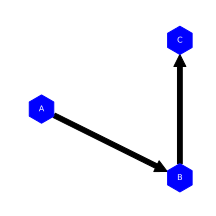
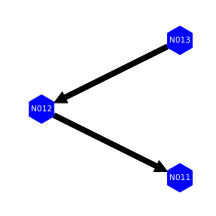
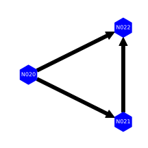
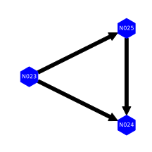
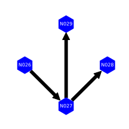
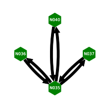
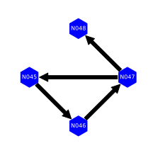
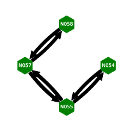

Transport Network Simplification through Network Disaggregation and Reassembly
Overview
Geographic representations of networks, such as transport networks, typically consist of end-point, junctions and simply-connected nodes. Where a simply-connected node is a node which is only connected to two other nodes. In the following diagram B is a simply-connected node:
| Simply-connected network | Simplified network |
|---|---|
|  |
As this is a transport network the directed representation is then convered to a bi-directional graph.
Geographic networks then typically consist of a large number of simply-connected nodes with a smaller number of end-point or simply-connected. For example, analysis of the OpenStreetMap (OSM) British rail-network shows 497 359 nodes with 506 337 edges but, once duplicate edges are removed, and bi-directional edges of the 1 012 604 segments 925 172 (91.4%) are simply-connected.
A simplified junction and end-node network is then created by combining all simply-connected nodes using an edge colouring algorithm to a bi-directional copy of the base network.
Network disaggregation
The bi-directional network is created by disaggregating the based network into its component edges and adding missing edges
Initial network disaggregation and assembly
The creation of the inital segmented network is as follows:
- The base network is broken into its constituent edges. Each edge corresponds to a source-and-target pair in the base network
- Existing Bi-directional source-target/target-source edges are identified
- The network completed by adding missing bi-direction edges
- A unique logical colour allocated to each edge in this segmented network
| Base network | Bi-directional network |
|---|---|
Deduplication of parallel edges and counting nodes
As the edge count for a given node is used to identify simply-connected nodes, parallel edges (edges with identical source and target nodes) are output and duplicates edges combined, and the edge count for each node calculated
Identification of network links
Using the source and target edge, node and edge count for a give node the edges linking nodes are identified
- For each edges corresponding source and target node and edge counts are determined
- Source and target nodes are combined to identify inbound and outbound edges for a give node
- Links are pruned to remove:
- Simple loops where the inbound-source and outbound-target nodes are the same
- Complex end points where the outbound target-node edge-count is three or more
Network simplication
The the network is simplified by colouring of edges corresponding to simple-elements when reassembling the disaggregated network:
Colouring of edges
The network is segmented by giving the source edge-colour to all linked simply-connected edges:
- All active segments are identified, where the target-node edge-count is two and source-node edge-count is not two
- For every active-segment, identify the corresponding current source-node, source-edge and target-edge
- If this target-edge is simply-connected
- Apply the source-edge colour to the target-edge
- Make the current target-edge the source-edge
- Repeat stage 3 until the target-edge is not simply connected
- Iterate through all active segments
Colouring of simple loops
A loop with three nodes simply-connected edges is problematic as all nodes in the loop are simply connected. This can prove problematic as is shown in ID W013 and W014 examples below
| Simple-loop | Bi-directional loop |
|---|---|
To address this, an arbitary edge is selected and the colour is applied to the two adjacent edges
- All active segments are identified, where the target-node and source-node edge-count is two and the edge has not previously been visited
- Apply the source-edge to the child target-edge and the grand-child target-edge
- Iterate through all active loops
The result is then
| Simple-loop | Simplified loop |
|---|---|
Reassembly of the simplified network
The simplified network is reassembled by segmenting the network based on the logical colour of edges and nodes. The first source node and edge is identfied and the network segment is traversed collating intermediate nodes, until the segment end-node is identified
- All start-edges are identified for a given colour of segment, where the intial and updated edge colour are the same
- For every start-segment, identify the corresponding current start-node, start-edge and target-edge
- If this target-edge is not a loop and not the start-edge
- Collate the source node
- Make the current target-edge the source-edge
- Repeat stage 4 until the target-edge is a start-edge
- Gather the start- and end- nodes for the segment colour
- Iterate through all start-edges segments
The reassembled simplified network consisting of aggregated start- and end- node is then output
Examples
To illustrate the input and simplified networks a based set of example graphs are considered:
Simple networks
These are examples of trivial base network simplification
Two node networks
Examples of a simple directed network
| ID | Simply-connected network | Simplified network |
|---|---|---|
| W001 | ||
| W002 |  |
Simple three node networks
Examples of three nodes with permutations of directed source and target nodes simpliplications
| ID | Simply-connected network | Simplified network |
|---|---|---|
| W003 | ||
| W004 | ||
| W005 |  | |
| W006 |
Three node loops
Examples of three nodes forming loops with permutations of directed source and target nodes
| ID | Simply-connected network | Simplified network |
|---|---|---|
| W007 |  |
|
| W008 |  | |
| W009 |  |
More complex networks
These are example simplifications of more complex base networks that typically caused problems when developing this simplification approach
A node with three edges
An example of a four-node network with a node with three edges
| ID | Simply-connected network | Simplified network |
|---|---|---|
| W010 |  |
Five node networks
An example of a simple connected five-node network and a with a multiply connected node
| ID | Simply-connected network | Simplified network |
|---|---|---|
| W011 |  |
 |
| W012 |  |
Problematic three-node loops networks
An example of a four-node network with a three-node loop. The introduction of a connected node breaks the symmetry of the three-node loop and the asymmetry makes it unclear how these cases should be resolved as the three node loop forms the start or the end of a simply connected network
| ID | Simply-connected network | Simplified network |
|---|---|---|
| W013 | ||
| W014 |  |
Five node networks with loops
Examples of five node networks with an embedded three node loop. In these cases the three node loop is flattend
| ID | Simply-connected network | Simplified network |
|---|---|---|
| W015 | ||
| W016 |  |
Six node networks with loops
Examples of five node networks with an embedded three and four node loop. Where possible the three and four node loops are flatten.
| ID | Simply-connected network | Simplified network |
|---|---|---|
| W017 | ||
| W018 | ||
| W019 |
Summary
This algorithmic method is an approach to simplify a network for the disaggregation and reassembly of a simplified network in which resolving data issues such missing or duplicated elements, and of loops.
This consists of implementation the method along with test-data and visualisation tool developed in python3 using the pandas, matplotlib and an modified version of networkx python packages is described in the goldfinch/graph project here on github